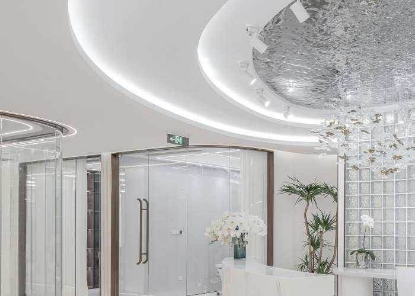

Antes e depois
Registros feitos na própria unidade, sempre com a mesma luz, o mesmo ângulo e o mesmo enquadramento. Use os filtros para ver apenas o procedimento que te interessa.
Aviso importante. Resultados variam de pessoa para pessoa e dependem de fatores como idade, hábitos, adesão ao protocolo e características individuais. As imagens não representam garantia de resultado. Publicação de fotos de pacientes exige autorização de uso de imagem por escrito e segue as normas dos conselhos profissionais.
Criofrequência · abdômen
Harmonização de glúteo
Depilação a laser · pernas
Limpeza de pele + peeling
Massagem modeladora · costas
Método Mary Iaczinski
Depilação a laser · axilas
Microagulhamento facial
Criofrequência · flancos
Nenhum resultado nesta categoria por enquanto.
As imagens desta galeria são placeholders marcados com a etiqueta “imagem ilustrativa”,
criados para o projeto acadêmico. Ver docs/03-imagens.md para o passo a passo de substituição.
Quer saber o que dá para alcançar no seu caso?
Na avaliação gratuita fazemos a análise corporal ou facial completa e mostramos, com honestidade, o que o protocolo consegue entregar — e o que não consegue.
